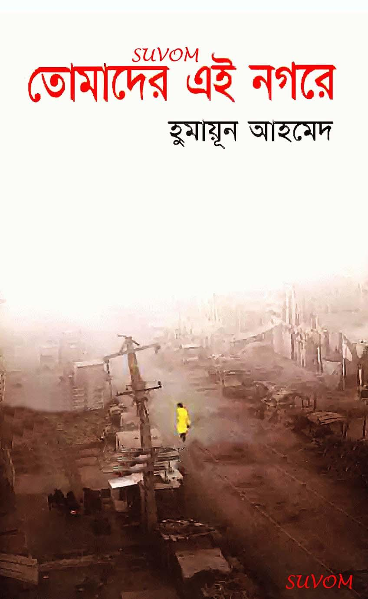

মেয়েটা দরজা ধরে দাঁড়িয়ে আছে। তার এক হাতে খাতা। খাতায় কুমীরের ছবি আঁকা। কুমীর রঙ করা হচ্ছিল। আংগুলে ক্রেয়নের সবুজ রঙ লেগে আছে।
মেয়েটির দাঁড়িয়ে থাকার মধ্যে কঠিন ভঙ্গি আছে। তবে দুটা চোখই টলটলা। চোখের দিকে তাকালেই মনে হবে এক্ষুনি পানিতে চোখ ভর্তি হয়ে যাবে।
আমি বললাম, কেমন আছ পাখি ?
মেয়েটা জবাব দিল না। অপরিচিত মানুষের আন্তরিক প্রশ্নে খটকা লাগে । মেয়েটার মনে খটকা লাগছে। সে আমাকে লক্ষ করছে। বোঝার চেষ্টা করছে। আমি বললাম, তোমার কুমীরের ছবির রঙটা ঠিক হয়নি। কুমীর কখনো সবুজ হয় না।
‘এই কুমীরটা যে পানিতে ছিল সেই পানি শ্যাওলায় ভর্তি। এই জন্যেই কুমীরটা সবুজ।’
‘কুমীর থাকে নদী-নালায়। নদী নালায় শ্যাওলা হয় না। আমার ধারণা তোমার কাছে শুধু সবুজ রঙ আছে বলে কুমীর সবুজ রঙ করেছ।’
‘আমার কাছে সবুজ আর লাল রঙ আছে।’
‘তা হলে সবুজ রঙের কুমীর বানিয়ে ভালই করেছ। লাল রঙের কুমীরের চেয়ে সবুজ রঙের কুমীর ভাল।’
পাখির কাঠিন্য হঠাৎ কমে গেল। সে শান্ত গলায় বলল, আপনাকে আমি চিনেছি। আপনার সঙ্গে আমার টেলিফোনে কথা হয়েছে। আপনার নাম হিমু। আপনি তো বাবার সঙ্গে কথা বলতে এসছেন, বাবা বাসায় নেই।
‘আমি তোমার বাবার সঙ্গে কথা বলতে আসিনি। তোমার সঙ্গে গল্প করতে এসেছি। আজ স্কুলে যাওনি ?’
‘না।’
‘স্কুলে নিয়ে যাওয়ার কেউ ছিল না এই জন্যে ?’
‘হু।’
‘বাসায় তুমি ছাড়া আর কে আছে ?’
পাখি জবাব দিল না। আমি লক্ষ করলাম তার চোখে পানি জমতে শুরু করেছে। সে হাতের তালুতে চোখ মুছল। লাভ হল না, সঙ্গে-সঙ্গে চোখ আবার পানিতে ভর্তি হয়ে গেল। আমি পুরোপুরি নিঃসন্দেহ হলাম মেয়েটা বাড়িতে একা আছে। গত রাতেও হয়তোবা একাই ছিল।
‘ঢাকায় তোমাদের আত্মীয়-স্বজন আছেন না ?’
‘আছেন।’
‘তুমি তাদের ঠিকানা জান না ?’
মেয়েটা না-সূচক মাথা নাড়ল। সে তার চোখের পানি নিয়ন্ত্রনে নিয়ে নিয়েছে। এখন তার চোখ শুকনা। ছলছলে ভাবও নেই।
‘তোমার বাবা কোথায় তুমি জান ?’
‘জানি।’
‘সকালে নাশতা খেয়েছ ?’
‘না ’
‘না কেন ? ঘরে খাবার কিছু ছিল না ?’
‘না।’
‘আমার ধারণা আছে। তুমি ভাল করে খুঁজে দেখনি। আটা থাকার কথা। আটা দিয়ে রুটি বানানো যায়। শব্জি থাকার কথা। শব্জি ভাজি, রুটি। ডিম যদি থাকে তা হলে ডিমের মামলেট। তুমি রান্না করতে পার না ?’
‘চায়ের পানি গরম করতে পারি।’
‘আসলটাই তো পার। রুটি বেলাও খুব সহজ। আটা দিয়ে একটা গোল্লার মত বানিয়ে বেলতে হয়.....’
পাখির চোখের কোণায় সামান্য আনন্দ যেন ঝলসে উঠল। চোখ চিকচিক করে উঠল। আমি বললাম- চলো রান্নাঘরে গিয়ে দেখি কী আছে, কী নেই। আমিও সকালে নাশতা করিনি। আজকের নাশতাটা তুমি বানাও। দু'জনে মিলে নাশতা করি। নাশতা বানাতে পারবে না ?
‘আপনি দেখিয়ে দিলে পারব।’
‘আমি দেখিয়ে দেব কী ভাবে ! আমি কিছু জানি না-কি ? যাই হোক দেখি দু’জনে মিলে চিন্তা-ভাবনা করে একটা কিছু করতে হবে। আগে চলো রান্নাঘর ইন্সপেকশন করে দেখি।’
রান্নাঘরে ময়দা পাওয়া গেল, আলু পাওয়া গেল; একটা ডিম পাওয়া গেল। আমি পাখিকে নিয়ে মহা উৎসাহে রান্না-বান্নায় লেগে গেলাম। রান্না করতে-করতে জানা গেল পাখি কাল রাতে একা ছিল । ঘরে পাউরুটি এবং কলা ছিল । পাউরুটি কলা খেয়েছে। বাবা ফিরে আসবেন এই ভেবে অনেকরাত পর্যন্ত জেগে ছিল। তার স্কুলের অনেক হোমওয়ার্ক ছিল সব করে ফেলেছে।
‘ভয় লাগেনি ?’
‘বাথরুমে কে যেন হাঁটাহাটি করছিল তখন একটু ভয় লেগেছে।’
আমি ভীত গলায় বললাম, বাথরুমে কে হাঁটাহাটি করছিল, ভূত ?
পাখি বিরক্ত হয়ে বলল, আপনি কি যে বাচ্চাদের মত কথা বলেন। ভূত বলে পৃথিবীতে কিছু আছে না-কি ?
‘নেই ?’
‘অবশ্যই না। ভূত, রাক্ষস, খোক্কস সব বানানো।’
আমি বললাম, ভূত-প্রেতের গল্প এখন থাকুক। আমার এদের কথা শুনলেই গা ছমছম করে।
পাখি বিস্মিত হয়ে বলল, আপনি এত ভীতু কেন ?
আমি হাই তুলতে-তুলতে বললাম, আমার অনেক বুদ্ধি তো, এই জন্যে ভীতু। বুদ্ধিমানরা ভীতু হয়। যার যত বুদ্ধি সে তত ভীতু ।
‘আপনার কথা ঠিক না। আমারও অনেক বুদ্ধি কিন্তু আমি ভীতু না।’
‘তা অবশ্যি ঠিক।’
‘আর আপনি যে নিজেই নিজেকে বুদ্ধিমান বলছেন, এটাও ঠিক না। এতে অহংকার করা হয়। কেউ অহংকার করলে আল্লাহ খুব রাগ করেন।’
‘আল্লাহ মোটেই রাগ করেন না। আল্লাহ কি তোমার-আমার মত যে চট করে রেগে যাবেন ? কেউ অহংকার করলে আল্লাহ খুব মজা পান। মজা পেয়ে বলেন, আরে বোকাটা কী নিয়ে অহংকার করছে !’
‘আপনাকে কে বলেছে ?’
‘কেউ বলেনি আমার মনে হয়।’
‘আল্লাকে নিয়ে এই ধরনের কথা মনে হওয়াও খারাপ। এতে পাপ হয়। আপনি এ ধরনের কথা আর কখনো বলবেন না।’
‘আচ্ছা বলব না, আর শোনো তুমি কী রুটি বেলছ ? আঁকাবাকা হচ্ছে ।’
‘আপনি উল্টা-পাল্টা কথা বলছেন তো এই জন্যে মন দিয়ে কাজ করতে পারছি না।’
‘আচ্ছা যাও আর কথা বলব না- লাস্ট কথাটা বলে নেই।’
‘বলুন।’
‘নাশতা শেষ করেই তুমি একটা সুটকেসে তোমার বই খাতা, জামা টামা এইসব দরকারি জিনিস গুছিয়ে নেবে। আমরা ঘরে তালা দিয়ে চলে যাব।’
‘কোথায় যাব ?’
‘আমার এক পরিচিত বাসায় তোমাকে রেখে আসব। এখানে তোমাকে একা ফেলে রেখে যাওয়া যাবে না। যে-বাড়ির বাথরুমে ভূত হাঁটাহাটি করে সেই বাড়িতে তোমাকে একা রেখে যাওয়া অসম্ভব ব্যাপার।’
‘বাথরুমে ভূত হাঁটাহাটি করে আপনাকে কে বলল ?’
‘তুমিই না বললে ?’
পাখি মহা বিরক্ত হয়ে বলল, ভূত হাঁটাহাটি করে এরকম কথা তো আমি বলিনি। আমি শুধু বলেছি- বাথরুমে শব্দ হচ্ছিল। মনে হচ্ছিল কে যেন হাঁটছে।
‘কে যেন হাঁটছেটাই ভূত। শহরের বেশির ভাগ ভূতই থাকে বাথরুমে। ওদের একটু পরপরই পানির তৃষ্ণা পায় তো, বাথরুমে থাকাটাই এদের জন্যে সুবিধাজনক। তবে এদের পছন্দ বাথটাবওয়ালা বাড়ি। রাতে বাথটাবে শুয়ে ওরা আরাম করে ঘুমায়।’
পাখি রুটি বেলা বন্ধ করে আমার দিকে তাকিয়ে হতাশ গলায় বলল, আপনি দেখি খুবই বোকা। আপনি এত বোকা কেন ?
আমি হেসে ফেললাম। কারণ, আপনি এত বোকা কেন ? এই প্রশ্নটি আমি আমার এক জীবনে অসংখ্যবার শুনেছি এবং শুধু মেয়েদের কাছ থেকেই শুনেছি। সবচে বেশি শুনেছি রূপার কাছ থেকে । আমার ধারণা আজ আমি যখন পাখিকে নিয়ে রূপার কাছে উপস্থিত হব রূপা কথাবার্তার এক পর্যায়ে অবশ্যই বলবে, হিমু তুমি এত বোকা কেন ?
আমার বাবা তার উপদেশমালায় লিখে গেছেন-
বাবা হিমালয়,
তোমাকে বাস করিতে হইবে অনেকের মধ্যে । লক্ষ রাখিও সেই অনেকের কেউই যেন তোমাকে কখনো চালাক বা বুদ্ধিমান মনে না করে। মহাপুরুষরা চালাক হন না, বুদ্ধিমান হন না, আবার তারা বোকাও হন না। পৃথিবীর এই অনিত্য জগতে বুদ্ধির স্থান নাই। বুদ্ধি দ্বারা এই জগত বুঝিবার চেষ্টা করিবে না। চেতনা দ্বারা বুঝিবার চেষ্টা করিবে। বুদ্ধি চেতনাকে নষ্ট করে .......
রূপার শরীর ভাল নেই।
এই প্রচণ্ড গরমেও সে চাদর গায়ে দিয়ে বসে আছে। চোখ মুখ ফোলা। নাক দিয়ে ক্রমাগত পানি পড়ছে। কোলে রাখা টিসু বক্স দ্রুত শেষ হয়ে আসছে। রূপা আমার দিকে তাকিয়ে বলল, কত দিন পরে তোমাকে দেখলাম বলো তো ?
আমি বললাম, প্রায় এক বছর।
রূপা বলল, এক বছর সাত মাস, ন দিন।
‘ঘণ্টা মিনিট বাদ দিলে কেন ?’
‘ঘণ্টা মিনিটও বলতে পারব। বলতে ইচ্ছা করছে না বলে বলছি না। তোমার সঙ্গের এই মেয়েটি কে ?’
‘ওর নাম পাখি । ও তোমার সঙ্গে কিছুদিন থাকবে। বারো তারিখ ওর জন্মদিন । জন্মদিনের দিন আমি ওকে নিয়ে যাব।’
রূপা কিছু বলল না। আমার দিকে তাকিয়ে রইল। আমি বললাম, তোমার কী হয়েছে ?
রূপা বলল, আমার তেমন কিছু হয়নি। তোমার কতদূর কী হয়েছে সেটা বলো। মহাপুরুষ হতে পেরেছ ?
‘না।’
‘চেষ্টা চালিয়ে যাচ্ছ ? এই মেয়েটাকে যে আমার এখানে রেখে যাচ্ছ এটাও কি তোমার মহাপুরুষ-কৰ্মশালার অংশ ?’
আমি হাসলাম ।
রূপা বলল, প্লীজ হাসবে না। তোমার হাসি কোনো দিনই আমার ভাল লাগেনি। যত দিন যাচ্ছে তোমার হাসি ততই বিরক্তিকর হচ্ছে । হায়নার হাসিও তোমার হাসির চেয়ে সুন্দর।
আমি বললাম, রূপা হাসি বন্ধ। আমি চলে যাচ্ছি। তুমি পাখিকে ডেকে ওর সঙ্গে একটা দুটা কথা বল। নতুন এক বাড়িতে সে থাকতে এসেছে তার এন্ট্রিটা সহজ করে দাও। ও তোমার কঠিন মূর্তি দেখে ঠিক ভরসা পাচ্ছে না।
রূপা হাত ইশারায় পাখিকে ডাকল। পাখি শংকিত পায়ে এগিয়ে এল। রূপা কঠিন গলায়, মাস্টারনীর ভঙ্গিতে বলল, এই মেয়ে তোমার নাম কি ?
পাখি ভয়ে ভয়ে বলল, পাখি ।
‘পাখি তোমার নাম ?’
‘জ্বি।’
‘তুমি কি উড়তে পার ?’
‘না।’
‘না বলে লাভ নেই। যেহেতু তোমার নাম পাখি সেহেতু তোমাকে আকাশে উড়তে হবে। আমি ওয়ান টু থ্রি বলব সঙ্গে সঙ্গে ওড়া শুরু করবে। ওয়ান-টু-খ্ৰী। কই উড়ছ না কেন ?’
পাখি অবাক হয়ে তাকিয়ে আছে। রূপা তার বিখ্যাত খিলখিল হাসি শুরু করেছে। আমি এই হাসির নাম দিয়েছিলাম জলতরঙ্গ হাসি। রূপার এই হাসির শব্দটাতেই একটা ম্যাজিক আছে। শব্দ শুনলেই মনে হয়- এটা শুধু হাসি না । হাসি দিয়ে দু’হাত বাড়িয়ে দেয়া। হাসির মাধ্যমে কাছে ডাকা ।
আমি যা ভাবছিলাম তাই হল, হাসির শব্দ শুনেই পাখি ছুটে এসে রূপাকে জড়িয়ে ধরে ফুপিয়ে কাঁদতে শুরু করল। বাচ্চা মেয়েটির বুকে অনেক অশ্রু জমে আছে। অশ্রু বের হওয়া দরকার।
আমি ওদেরকে রেখে আবার পথে নামলাম । আকাশ মেঘলা। রবীন্দ্রনাথের গানের মত মেঘের উপর মেঘ করে আঁধার হয়ে আসছে। এমন দিনে হাঁটতে চমৎকার লাগে ।
দশ গজ যাইনি তার আগেই গা ঘেসে একটা গাড়ি থামল। গাড়ির কাচ নামিয়ে বোরকা পরা এক মহিলা চাপা গলায় বললেন, তাড়াতাড়ি গাড়িতে উঠুন।
আমি গাড়িতে উঠলাম। বোরকাওয়ালী বললেন, ভাল আছেন ?
আমি বললাম, হ্যাঁ।
‘আমাকে চিনতে পেরেছেন ?’
‘না।’
‘বোরকা পরলেও আমার চোখ তো দেখা যাচ্ছে । চোখ দেখেও চিনতে পারছেন না ?’
‘পারছি না।’
‘আমার গলার স্বরও চিনতে পারছেন না ?’
‘না। মেয়েদের গলার স্বরের মধ্যে একমাত্র রূপার গলার স্বর আমি চিনতে পারি। আর কারোর গলা চিনতে পারি না।’
‘রূপা কে ? আচ্ছা থাক বলতে হবে না বুঝতে পারছি কে ! এবং আমার ধারণা আপনিও বুঝতে পারছেন আমি কে।’
‘তুমি জুঁই। বোরকা পরেছ কেন ? কোনো মওলানা বিয়ে করেছ ?’
জুঁই হেসে ফেলল। শব্দ করে হাসি। অত্যন্ত আশ্চর্যের ব্যাপার তার হাসিও রূপার হাসির মত । ঝনঝন করে জলতরঙ্গের মত বাজছে। কাছে ডাকার হাসি।
‘খিলখিল করছ কেন ?’
‘খিলখিল করছি কারণ আপনাকে দেখে খুব মজা লাগছে। আপনি কি জানেন আমি পাগলের মত আপনাকে খুঁজছি। আপনার একটা মোবাইল টেলিফোন ছিল না ? সেই নাম্বারটাও ভুলে গেছি। আমি আবার নাম্বার মনে রাখতে পারি না। ম্যাট্রিকের রোল নাম্বার কোনো ছেলে মেয়ে ভোলে না। অথচ আমি ভুলে গেছি। আচ্ছা আপনার কি ম্যাট্রিকের রোল নাম্বার মনে আছে ?’
আমি বললাম, তুমি এত আনন্দিত কেন ?
জুঁই হাসতে-হাসতে বলল, আমি আনন্দিত কারণ চোর-পুলিশ খেলায় আমি বাবাকে হারিয়ে দিয়েছি। আপনি তো জানেন না বাবা আমার জীবন অতিষ্ট করে দিয়েছিল। আমার পেছনে সব সময় দু'তিনজন স্পাই। কোথায় যাই-না-যাই সব বাবা জানেন। আমার ঘরে যে টেলিফোন সেখানেও এমন ব্যবস্থা করা ছিল আমি যখন যার সঙ্গে কথা বলছি সব রেকর্ড হয়ে যাচ্ছে।
‘তোমার অবস্থা তো তা হলে মনে হয় খারাপই।’
‘হ্যাঁ খারাপ। খুব খারাপ। বাবা যে শুধু আমার পেছনে স্পাই লাগাতেন তা-না, আমি যদি কোনো ছেলের সঙ্গে কয়েকবার কথা বলতাম তা হলে তার পেছনেও স্পাই লাগিয়ে দিতেন।’
‘গোয়েন্দা বিভাগে কাজ করার জন্যে মনে হয় এটা হয়েছে।’
জুঁই সহজ গলায় বলল, আমার মা বাবাকে ছেড়ে পালিয়ে বাবার অতি প্রিয় এক বন্ধুকে বিয়ে করেছিল সেই থেকে হয়েছে। বাবা কাউকে বিশ্বাস করতে পারে না। ভাল কথা আপনি কি আমাদের কয়েকদিন লুকিয়ে থাকার মত কোনো একটা জায়গার ব্যবস্থা করে দিতে পারবেন ?
‘আমাদের মানে কি ? বিয়ে করেছ ?’
‘হু করেছি।’
‘প্রেমের বিয়ে ?’
জুঁই হাসতে-হাসতে বলল, বিয়ে করে ফেলার মত প্রেম ছিল না, বিয়ে করেছি বাবাকে শিক্ষা দেবার জন্যে ।
‘আমার তো ধারণা ওনার যথেষ্ট শিক্ষা হয়ে গেছে।’
‘উহুঁ এখনো শিক্ষা হয়নি। আমি বাবার গোয়েন্দাগিরি জন্মের মত শেষ করব। এর মধ্যে আমি আবার মনসুরকে দিয়ে বাবাকে টেলিফোন করিয়েছি। মনসুর গলা মোটা করে বলেছে— থাক এসব বলতে ইচ্ছা করছে না। মনসুর আমার হাজবেন্ডের নাম। সে যেমন সাধারণ তার নামটাও সাধারণ । আমি অবশ্যি তাকে মনসুর ডাকি না। আমি ডাকি— ‘মন’ । কই আপনি বললেন না- কয়েকদিন থাকার মত একটা জায়গা আপনি দিতে পারেন কি-না। তিন-চার দিন থাকতে পারলেই আমার সমস্যার সমাধান হয়ে যাবে।’
‘কী ভাবে ?’
‘আমার মা’কে খবর দিয়েছি। উনি থাকেন জার্মানীতে । মা চলে আসছেন।’
‘ও।’
‘এখন বলুন তিন-চার দিন লুকিয়ে থাকার মত কোনো জায়গা কি আছে ?’
‘পাখিদের বাসায় থাকতে পারো !’
‘পাখি কে ?’
‘পাখি হল হাদিউজ্জামানের মেয়ে।’
‘হাদিউজ্জামান কে ?’
‘হাদিউজ্জামান হচ্ছে মালিহা বেগমের কেয়ারটেকার।’
‘মালিহা বেগম কে ?’
‘মালিহা বেগম হল আরেফিন সাহেবের মৃত স্ত্রী।’
জুঁই ক্লান্তির নিঃশ্বাস ফেলে বলল, আপনার সঙ্গে বক বক করতে ভাল লাগছে না, আপনি নিয়ে যান আমাকে ঐ বাড়িতে।
‘আমার যাবার দরকার কী ? তোমাকে চাবি দিয়ে দিচ্ছি। বাড়ির ঠিকানা বলে দিচ্ছি তুমি মন সাহেবকে নিয়ে উঠে পড়।’
‘কেউ কিছু বলবে না ?’
‘মনে হয় না কেউ কিছু বলবে। আর যদি বলে তুমি বলবে তুমি পাখির চাচাতো বোন। বাড়ি পাহারা দেবার জন্যে আছ।’
‘আমি রাজি।’
‘এই নাও চাবি।’
জুঁই বিস্মিত হয়ে বলল, একটা পুরো খালি বাড়ির চাবি আপনি পকেটে নিয়ে কী জন্যে ঘুরছিলেন ?
আমি বক্তৃতা দেবার ভঙ্গিতে বললাম, জুঁই শোনো আমরা সবাই বড় একটা পরিকল্পনার অংশ। সেই বড় পরিকল্পনা যিনি করেন আমরা তাকে দেখতে পাই না। কেউ তাকে বলে নিয়তি, কেউ বলে প্রকৃতি আবার কেউ কেউ বলে আল্লাহ। আমি পাঞ্জাবির পকেটে খালি বাড়ির চাবি নিয়ে ঘুরব এবং তোমার সঙ্গে আমার দেখা হবে এটা আমার ধারণা বড় পরিকল্পনার ক্ষুদ্র একটা অংশ।
জুঁই শান্তগলায় বলল, আপনার কথা আমার বিশ্বাস করে ফেলতে ইচ্ছা করছে, কিন্তু আমি বিশ্বাস করছি না। গোয়েন্দা বাবার মেয়ে এত সহজে সব কিছু বিশ্বাস করে না।
আমি বললাম, জুঁই তুমি একটু শব্দ করে হাসো তো ?
জুঁই বলল, কেন ?
তোমার হাসির শব্দ অসম্ভব সুন্দর।
জুঁই বলল, আপনার কোনো কথাই আমি বিশ্বাস করি না, কিন্তু এই কথাটা বিশ্বাস করলাম ।
৮
মুসলেম মিয়া আবারো পত্রিকার প্রথম পাতায় চলে এসেছে। ছবি সহ নিউজ ।
মুসলেম ছাড়া পেলেন
বৃষ্টিতে নগ্ননৃত্য করে যিনি সবার নজর কেড়েছিলেন সেই মুসলেম মিয়া দু’দিন হাজত বাসের পর ছাড়া পেয়েছেন। খবরে জানা গেছে পুলিশের গাড়ি তাকে পুরানো ঢাকার শাহসাহেব গলিতে নামিয়ে দেয়। সেই সময় তার পরনে পুলিশের উপহার দেয়া নতুন পায়জামা পাঞ্জাবি ছিল । অপরাধী হিসেবে ধৃত কারোর প্রতি পুলিশের এই আচরণ নজিরবিহীন। জানা গেছে থানার পুলিশ বাহিনীর সদস্যদের অনেকেই পা ছুঁয়ে তার দোয়া নিয়েছেন ।
মুসলেম মিয়া সম্পর্কে থানা সূত্রে প্রাপ্ত একটি তথ্য হচ্ছে গত দু'দিন মুসলেম মিয়া কোনো খাদ্য গ্রহণ করেননি। এবং এক মুহুর্তের জন্যেও নিদ্রা যাননি। গ্রেফতারের প্রথম দিনে কিছু কথাবার্তা বললেও দ্বিতীয় দিন থেকে তিনি কারো সঙ্গেই কোনো কথা বার্তা বলেন নি। একটি অসমর্থিত খবরে বলা হয় মুসলেম মিয়ার শরীর থেকে ভুড়ভুড় করে বেলী ফুলের গন্ধ আসছে।
মুসলেম মিয়াকে দেখতে যাওয়ার দরকার। সত্যি-সত্যি তার জীবনে কোনো ঘটনা ঘটে গেছে কি-না কে জানে। ‘নদীর সঙ্গে মানুষের অনেক মিল আছে’ এ ধরনের কথা বলা হয়। নদীর সঙ্গে মানুষের সবচে বড় অমিল হল নদীর পানি হঠাৎ করে উল্টো দিকে বইতে শুরু করতে পারে না। মানুষের গতি পথ হুট করে কোনো রকম পূর্ব ঘোষণা ছাড়াই পাল্টে যেতে পারে ।
ঘোর বৈষয়িক মানুষও এক ভোরবেলায় ঘুম থেকে উঠে চায়ের কাপ হাতে নিয়ে হঠাৎ বলে বসতে পারেন- এ জীবনে যা উপার্জন করেছি, সৎ উপার্জন এবং অসৎ উপার্জন সবই আমি দান করে দিতে চাই। ব্যবস্থা করো। কিংবা আশ্রমের কোন মহাপুরুষ ধরনের সাধক মানুষ তার সমগ্রজীবনের পূন্যফল হঠাৎ কোনো এক রাতে আশ্রমের কোনো কাজের মেয়ের পায়ে তুলে দিয়ে বলে- এইটাই আসল জীবন।
মানুষ নদী না। মানুষ অন্য জিনিস ।
মুসলেম মিয়ার সঙ্গে যোগাযোগের পরিকল্পনা আপাতত স্থগিত রাখলাম। তার সঙ্গে দেখা করার আগে আমাকে জরুরি ভিত্তিতে একটা কাজ করতে হবে, হাদি সাহেবের সঙ্গে যোগাযোগ করতে হবে। তাকে বলতে হবে তার মেয়ে ভাল আছে। এমন এক জায়গায় তাকে রাখা হয়েছে যে তাকে নিয়ে আর কোনো দুঃশ্চিন্তা করতে হবে না। হাদি সাহেব যদি বাকি জীবন জেলেই কাটিয়ে দেন, কিংবা ফাঁসির দড়িতে ঝুলে পড়েন তাতেও সমস্যা নেই।
আমাকে দেখে ওসি রকিবউদ্দিন সাহেব কিছুক্ষণ এমন ভাবে তাকিয়ে রইলেন যেন বিরক্ত হবেন না খুশি হবেন মনস্থির করতে পারছেন না। শেষে বিরক্ত হবার সিদ্ধান্ত নিয়ে বললেন, কী ব্যাপার ?
আমি গদগদ গলায় বললাম, আপনাকে দেখতে এসেছি। সামাজিক মেলামেশা । অনেকদিন দেখি না। মনটা কেমন যেন করছে।
‘থানা কি সামাজিক মেলামেশার জায়গা ? কোনো কাজে এসে থাকলে বলুন, আর কাজ না থাকলে চলে যান।’
‘সামান্য কাজ ছিল।’
‘সেটা কি ?’
‘হাদি সাহেবকে বলা যে তার মেয়েটা ভাল আছে।’
‘হাদিটা কে ?’
‘হাদিউজ্জামান খান। খুনের আসামী।’
‘বুঝতে পেরেছি। ও তো নেই।’
‘নেই মানে কি ?’
ওসি সাহেব হাই তুলতে তুলতে বললেন, বসুন বলছি। সামান্য ঘটনা আছে।
আমি সঙ্গে সঙ্গে গলা নামিয়ে বললাম, মেরে ফেলেছেন নাকি ? ডেড বডি কোথায় রেখেছেন ? পানির ট্যাংকে ? রিস্কি হয়ে যাবে তো ।
রকিবউদ্দিন সাহেব অত্যন্ত বিরক্ত হলেন। তবে এই বিরক্তি দীর্ঘস্থায়ী হল না। তিনি সিগারেট ধরালেন এবং সিগারেটের প্যাকেট আমার দিকে এগিয়ে দিতে দিতে বললেন, ব্যাটাকে মেডিকেলে ভর্তি করা হয়েছে।
আমি বললাম, কেন ?
‘পেটের ভেতর থেকে কথা বের করার জন্যে সামান্য ডলা দেয়া হয়েছিল। ডলাটা বেকায়দায় পড়ায় জ্ঞান হারিয়েছিল। ডলা খেয়ে অভ্যেস নেই তো।’
‘সেই জ্ঞান আর ফেরেনি ?’
‘নাহ্।’
‘জ্ঞান ফিরবে ? না-কি আর ফিরবে না ?’
‘আমি কী করে বলব ? ডাক্তার বলতে পারবে।’
‘মানুষটা যদি মারা যায় আপনাদের কোনো ঝামেলা হবে না ?’
‘ঝামেলা হবে কেন ?’
‘আপনাদের ডলা খেয়ে মারা গেল।’
ওসি সাহেব হাই তুলতে-তুলতে বললেন, কোনো ঝামেলা নাই—থানায় এফ আই আর করা আছে- আসামী গভীর রাতে হাজতের শিকে মাথা ঠুকছিল। রক্তাক্ত অবস্থায় তাকে নিবৃত্ত করা হয়।
‘ও।’
‘চা খান । দিতে বলব ?’
‘বলুন।’
চায়ের কাপে চুমুক দিতে-দিতে বললাম, এই যে ঘটনাগুলি ঘটে— আপনাদের হাতে লোকজন মারা যায় আপনাদের খারাপ লাগে না ?
ওসি সাহেব সিগারেটে লম্বা টান দিতে-দিতে বললেন, সত্যি কথা জানতে চান ?
‘হ্যাঁ জানতে চাই।’
‘পরনে যখন খাকি পোষাক থাকে তখন খারাপ লাগে না । বাসায় গিয়ে যখন লুংগি গেঞ্জি পরি তখন খারাপ লাগে।’
আমি বললাম, পুলিশের পোষাক পাল্টে লুংগী গেঞ্জি করলে ভাল হত। তাই না ?
রকিবউদ্দিন সাহেব ক্রুদ্ধ গলায় বললেন, লুংগি গেঞ্জি ? লুংগী পরে আমরা আসামীর পেছনে দৌড়াব ?
‘অসুবিধা কী ? মালকোচা মেরে দৌড় দেবেন।’
ওসি সাহেব এক দৃষ্টিতে তাকিয়ে আছেন। এখানে আর বেশি সময় থাকা ঠিক হবে না। চা-টা ভাল হয়েছিল। পুরো কাপ শেষ করলে ভাল হত । শেষ করা ঠিক হবে না। এই সময়ে বিস্ফোরণ ঘটে যেতে পারে।
আমি উঠে দাঁড়াতে-দাঁড়াতে বললাম- হাদি সাহেব কোথায় আছে বলবেন ? একটু দেখে আসতাম ! পুলিশের ডলা কী জিনিস সে সম্পর্কে ফাস্ট হ্যান্ড নলেজ নিয়ে আসতাম।
ওসি সাহেব যন্ত্রের মত বললেন, মেডিকেলে। ইনটেনসিভ কেয়ারে।
ভেবেছিলাম আমাকে দেখেই ডঃ মালেকা বানু তেলেবেগুনে টাইপ জ্বলে উঠবেন। কর্কশ গলায় ‘গেট আউট’ বলে বসবেন এবং বেল টিপে দারোয়ান ডাকাবেন।
সেরকম কিছুই করলেন না। শান্ত গলায় বললেন, হিমু সাহেব আসুন।
আমি থতমত খেয়ে গেলাম। কারো কাছ থেকে খুব খারাপ ব্যবহার পাব এ জাতীয় মানসিক প্রস্তুতি নিয়ে যাবার পর হঠাৎ যদি খুব ভাল ব্যবহার পাওয়া যায় তা হলে সব এলোমেলো হয়ে যায়। আমি কী বলব বুঝতে পারলাম না।
মালিকা বানু বললেন, বসুন। তেতুলের সরবত খাবেন ? আমার বড় মেয়ে কোথেকে জানি তেতুলের সরবত বানানো শিখে এসেছে। রোজ ফ্লাস্ক ভর্তি করে তেতুলের সরবত দিয়ে দিচ্ছে। আমি আবার টক খেতে পারি না। মেয়েটাকে সেই কথা বলতেও পারছি না। বেচারী এত শখ করে একটা জিনিস বানাচ্ছে।
আমি বললাম, দিন তেতুলের সরবত ।
মালেকা বানু হাসিমুখে গ্লাসে তেতুলের সরবত ঢাললেন। আমার দিকে গ্লাস বাড়িয়ে দিতে-দিতে বললেন, আজও কি আপনি আপনার খালু সাহেবের সঙ্গে গল্প করতে এসেছেন ?
আমি তেতুলের সরবতে চুমুক দিতে-দিতে বললাম, জ্বি না। আজ এসেছি হাদিউজ্জামানের সঙ্গে কথা বলতে ।
‘থানা থেকে যাকে পাঠিয়েছে সেই হাদিউজ্জামান ?’
‘জ্বি। আচ্ছা আপা আপনি বলুন তো হাদিউজ্জামানের বিছানা এবং আমার খালুসাহেব আরেফিন সাহেবের বিছানা কি পাশাপাশি।’
‘হ্যাঁ পাশাপাশি।’
আমি স্বস্থির নিঃশ্বাস ফেলে বললাম, তা হলে সব সমস্যার সমাধান হয়ে গেছে।
মালেকা বানু চোখ সরু করে বললেন, কী রকম ?
আমি বললাম, আমার ধারণা প্রকৃতি বা আল্লাহ বা মহাশক্তি পুরো ব্যাপারটা নিজের হাতে নিয়ে নিয়েছে। দু’জনকে ইনটেনসিভ কেয়ারে পাশাপাশি শুইয়ে দিয়েছে। কাজেই এখন বোঝা যাচ্ছে তার পরিকল্পনা মতোই সব কিছু হচ্ছে। আমাদের দুঃশ্চিন্তগ্রস্থ হবার কিছু নেই।
‘আপনি দুঃশ্চিন্তগ্রস্থ ছিলেন ?’
‘হ্যাঁ ছিলাম। আমার ধারণা আমার খালুসাহেবই খুনটা করেছেন। স্ত্রীর সঙ্গে ধস্তাধস্তিতে আহত হয়েছেন। কারণ আমার খালাও খুব সহজ পাত্রী না। অপরাধটা নিজের ঘাড় থেকে নামিয়ে ফেলে দিয়েছেন হাদিউজ্জমানের ঘাড়ে। যাই হোক এখন যেহেতু দু'জন পাশাপাশি আছে প্রকৃতি ব্যাপারটার দ্রুত মিমাংসা করে ফেলবে। দেখা যাবে বারো তারিখে হাদিউজ্জামান সাহেব তার মেয়ের জন্মদিনে উপস্থিত হবেন।
ডঃ মালেকা বানু আমার দিকে তাকিয়ে আছেন। তার দু'চোখে শান্ত কৌতুহল। তার চোখ দু’টি বলে দিচ্ছে আমি নিজ থেকে কিছু জিজ্ঞেস করব না। তবু তুমি যদি কিছু বলো তা হলে খুব আগ্রহ নিয়ে শুনব ।
আমার কিছু বলতে ইচ্ছা করছে না। ক্লান্তি লাগছে। ইচ্ছা করছে পার্কের কোন বেঞ্চিতে শুয়ে থাকতে। আকাশের যে অবস্থা বৃষ্টি নামবেই। পার্কের বেঞ্চিতে শুয়ে বৃষ্টিতে ভেজার মজা অন্য রকম।
আমি বললাম, আপা আপনার টেলিফোনটা কি একটু ব্যবহার করতে পারি ?
মালেকা বানু কোনো উত্তর না-দিয়ে টেলিফোন সেট এগিয়ে দিয়ে উঠে দাঁড়ালেন। টেলিফোনের কথাবার্তা তিনি শুনতে চান না। ভদ্রমহিলার ভদ্রতায় আরেকবার মুগ্ধ হলাম।
টেলিফোন করলাম নিজের মোবাইলের নাম্বারে । টেলিফোন ধরলেন জুঁই-এর বাবা। তিনি হতাশ এবং ক্লান্ত গলায় বললেন- কে ?
আমি বললাম, হিমু।
‘ও তুমি। জুঁই-এর কোনো খবর পেয়েছ ?’
‘জ্বি না, আপনি পেয়েছেন ?’
ভদ্রলোক চুপ করে রইলেন। আমি বললাম, স্যার আপনি যে আমার পেছনে গোয়েন্দা লাগিয়ে রেখেছিলেন- ওরা কি এখনো আছে ?
‘না। ওরা হঠাৎ একদিন তোমাকে মিস করেছে। তারপর আর তোমাকে লোকেট করতে পারছে না।’
‘স্যার আপনি বোধহয় এক্সপার্ট কাউকে দেননি। শিক্ষানবিশ কাউকে পাঠিয়েছিলেন। এখন আমি আছি ঢাকা মেডিকেল কলেজে। ডাঃ মালেকা বানুর চেম্বার।...’
‘হিমু শোনো...অর্থহীন কথা বলে আমার সময় নষ্ট করবে না। আমি আমার মেয়েকে পাচ্ছি না, আই এ্যাম অলমোস্ট এট দি পয়েন্ট অব লুজিং মাই সেনিটি.... আমি দু’রাত ঘুমাইনি। আমার ধারণা মেয়েটা মহা বিপদে পড়েছে। খুব খারাপ একটা টেলিফোন কল পেয়েছি,...’
আমি টেলিফোনে ফোঁপানির মত শব্দ শুনলাম। ভদ্রলোক কাঁদছেন নাকি ? কাঁদাটাই স্বাভাবিক।
আমি বললাম, স্যার আমি জুঁই-এর খবর আপনাকে দিতে পারি।
‘কী বললে ? জুই-এর খবর দিতে পার ?’
‘অবশ্যই পারি।’
‘কোথায় আছে সে ?’
‘সে কোথায় আছে তা এক শর্তে আপনাকে বলতে পারি।’
‘ডোন্ট টক নুইসেন্স। তোমার কাছে পুলিশের লোক যাচ্ছে- তুমি এক্ষুনি এই মুহুর্তে জুঁই-এর কাছে তাদের নিয়ে যাবে। আমিও সঙ্গে আসছি। এখন বলো এখন তুমি কোথায় আছ ?’
‘স্যার আপনি মন দিয়ে আমার কথা শুনুন। চিৎকার চেঁচামেচি করে কোনো লাভ হবে না। আপনার বা আপনার বাহিনীর সাধ্যও নেই আমাকে খুঁজে বের করার। আপনি আমার শর্ত মানলেই মেয়েকে পাবেন।’
‘শর্তটা কী ? তোমার কী লাগবে । টাকা ?’
‘টাকা না, একটা হাতির বাচ্চা।’
‘তার মানে ?’
‘একদিনের জন্যে আপনি একটা হাতির বাচ্চা জোগাড় করে দেবেন। এ মাসের বারো তারিখ ।’
‘হাতীর বাচ্চা আমি কোথায় পাব ?’
‘আপনার মত ক্ষমতাবান মানুষের পক্ষে হাতির বাচ্চা জোগাড় করা কোনো ব্যাপারই না। হাতির বাচ্চাটা জোগাড় করুন। বারো তারিখ ভোরবেলা আমি আপনাকে একটা ঠিকানা দেব। ঐ ঠিকানায় হাতির বাচ্চা নিয়ে চলে যাবেন। মেয়েকেও পেয়ে যাবেন।’
আমি টেলিফোন নামিয়ে রাখলাম। অতি দ্রুত এখন আমাকে চলে যেতে হবে। জুঁই-এর বাবা এখন থেকে হন্যে হয়ে আমাকে খুঁজবেন, যদি পেয়ে যান তা হলে আর হাতির বাচ্চার ব্যবস্থা হবে না। আমাকে না পেলে তিনি অবশ্যই হাতির বাচ্চা জোগাড় করবেন।
৯
আমি মুসলেম মিয়ার সঙ্গে কয়েকদিন ধরে আছি। দু’জনই পলাতক । মুসলেম পলাতক তার ভক্তদের কাছ থেকে, আমি পলাতক জুঁই-এর বাবার কাছ থেকে। পালিয়ে কেউ কেউ বস্তিবাসী হয়, আমরা দু’জন হয়েছি পাইপবাসী। বিশাল এক স্যুয়ারেজ পাইপে সংসার পেতেছি। পাইপের দু'মাথা চটের পর্দায় ঢাকা। বাইরের জগৎ থেকে চটের পর্দায় আমরা বিচ্ছিন্ন। আমাদের সঙ্গে আরো পাইপ-সংসার আছে। এখানকার ব্যবস্থা আধুনিক ফ্ল্যাটবাড়িগুলির মত। এক ফ্ল্যাটের মানুষ যেমন অন্য ফ্ল্যাটে কী হচ্ছে খবর রাখে না, পাইপ জগতেও এক পাইপের সংসার জানে না অন্য পাইপে কী হচ্ছে।
আমরা মোটামুটি সুখেই আছি। তবে মুসলেম মিয়া খুবই যন্ত্রণা করছে। সারাক্ষণ হা হুতাশ— ভাইজান আপনের কথা শুইন্যা বৃষ্টির পানিতে নেংটা হইয়া নাচলাম। এরপরেই যে কী হইল ভাইজান। এখন মানুষের মনের কথা বুঝি। কে মনে মনে কী ভাবতাছে পরিষ্কার ধরতে পারি। এই যেমন ধরেন আপনে এখন ভাবতেছেন একটা হাতির বাচ্চার কথা। সত্য বলতেছি কি-না বলেন ভাইজান ।
আমি বিস্মিত হয়ে বলি, হ্যা সত্য বলছ। হাতির বাচ্চার কথাই ভাবছি।
‘তারপর ধরেন বেলী ফুলের গন্ধ। সারা শইল দিয়া ভুরভুর কইরা গন্ধ বাইর হয়। আইজ সকালে একবার গায়ে মাখা সাবান দিয়া গোসল দিছি। দুপুরে গোসল দিছি কাপড় ধোয়া সাবান দিয়া । তারপরেও গন্ধ যায় না। কী করি ভাইজান বলেন।’
‘কী করতে চাও ?’
‘আগের মত হইতে চাই। পীর ফকির হইতে চাই না। পাপ করতে ইচ্ছা করে ।’
‘ইচ্ছা করলে পাপ করো।’
‘আমার যে অবস্থা ভাইজান আর তো মনে হয় পাপ করতে পারব না। পাপই যদি করতে না-পারি পৃথিবীতে বাইচা লাভ কী ? দুনিয়ার আসল মজা পাপে । পুণ্যির মজা নাই। কোনো একটা তরিকা আমারে বলেন যেন সব আগের মত হয়। ফুলের গন্ধটা অসহ্য হইছে ভাইজান। এরচে শইল্যে গু মাইখ্যা বইসা থাকা ভাল। এই যে দিন রাইত পাইপের মইধ্যে লুকাইয়া থাকি এইটা কি ভাল ?’
‘চলো আজ রাতে বের হই। কিছুক্ষণ হাঁটাহাটি করি।’
‘আপনে যা বলবেন করব। গু খাইতে বললে, বিসমিল্লাহ বলে কাচা গু খাব । খালি আমারে আগের মত বানায়া দেন।’
আমি মুসলেম মিয়াকে নিয়ে বের হলাম।
আজ বারো তারিখ। পাখির জন্মদিন। জন্মদিন হচ্ছে কি-না খোঁজ নেয়া দরকার। জুঁই এর বাবাকে সকালবেলা পাখিদের বাসার ঠিকানা দিয়ে দিয়েছি। তিনি হাতির বাচ্চা নিয়ে সেখানে উপস্থিত হলেন কি-না সেটাও জানা দরকার।
পাখিদের বাড়ির কাছাকাছি এসে থমকে দাঁড়াতে হল। বাড়ির সামনে বিরাট জটলা। অনেক লোকজন। ব্যাপার কী জিজ্ঞেস করতেই একজন হড়বড় করে বলল, এই বাড়িতে একটা হাতির বাচ্চা নিয়ে একজন গেছে।
আমি বললাম, হাতির বাচ্চা ?
‘জ্বি হাতির বাচ্চা। দেড় টনী ট্রাকে করে এনেছে।’
‘বিষয়টা কী ?’
‘বিষয়কি জানার জন্যেই তো আমরা দাঁড়ায়ে আছি।’
পাখি মেয়েটির আনন্দ নিজের চোখে দেখতে ইচ্ছা করছে। ইচ্ছাকে প্রশ্রয় দিলাম না। মানুষের গভীর আনন্দ এবং গভীর বিষাদ কাছ থেকে দেখতে নেই।
আমি মুসলেমের দিকে তাকিয়ে বললাম, মুসলেম তোমার আধ্যাত্বিক ক্ষমতা কী বলে ? পাখি মেয়েটির বাবা কি ফিরে এসেছে ?
মুসলেম সঙ্গে সঙ্গে বলল, জি ফিরেছেন। উনার শইল খারাপ, তয় ফিরেছেন । পুলিশ উনারে ছাইড়া দিছে।
মুসলেমের কথা অবিশ্বাস করার কোনো কারণ নেই। তার গা দিয়ে বেলী ফুলের গন্ধ ছড়াচ্ছে। তীব্র ভাবেই ছড়াচ্ছে। এই গন্ধের উৎস অনেক গভীরে। সাবান পানির ধোয়ায় এই গন্ধ যাবে না। আমি মুসলেম মিয়াকে নিয়ে হাঁটছি। মুসলেমের চোখে পানি ।
সে বিড়বিড় করে বলল, ভাইজান আপনের পায়ে ধরি আমারে বদলায়া দেন। ফুলের গন্ধে আমি পিসাব করি। আপনে আমারে আগের মুসলেম বানায়া দেন ।
হায়রে সেই ক্ষমতা যদি আমার থাকত। সব ক্ষমতা নিয়ে একজন দূরে বসে আছেন। ভুল বললাম, দূরে না, কাছেই বসে আছেন। খুব বেশি কাছে বলেই তাকে দেখা যায় না।
(সমাপ্ত)
একটি শুভম ক্রিয়েশন
তোমাদের এই নগরে
হুমায়ূন আহমেদ

তোমাদের এই নগরে
হুমায়ূন আহমেদ
উৎসর্গ
এ.এফ.এম. তোফাজ্জল হোসেন
এই মানুষটি জীবনে কোনো কিছুই চ্যালেঞ্জ
হিসেবে গ্রহণ করেন নি। তবু তাঁর বন্ধুরা
তাকে আদর করে ডাকে- চ্যালেঞ্জার।
###
রাতে দরজা জানালা খোলা রেখে ঘুমানোর কিছু উপকার আছে। ঘরে বাতাস খেলে, নিজেকে প্রকৃতির অংশ বলে মনে হয়, খাঁচার ভেতর ঘুমুচ্ছি এরকম মনে হয় না। খোলা দরজা দিয়ে চোর ঢুকবে এবং ঘরের জিনিসপত্র সাফ করে দেবে তাও কিন্তু না। চোরদের গাইড-বুক বলে, তালাবন্ধ ঘরে তালা ভেঙে ঢুকবে। কিন্তু দরজা জানালা সবই খোলা এমন ঘরে কখনো ঢুকবে না- সমস্যা আছে। কেউ খামাখা দরজা খোলা রাখে না। নিশ্চয়ই কোথাও কিন্তু আছে। চোরেরা ‘কিন্তু’ ভয় পায়।
চোরদের সাইকোলজির উপর ভরসা করেই আমি দিনের পর দিন দরজা জানালা খোলা রেখে ঘুমাই কখনোই কোনো সমস্যা হয় নি। কিন্তু কোনো একটা ব্যাপার কয়েকদিন হল ঘটেছে- প্রায় রাতেই ঘরে চোর আসছে বলেই আমার ধারণা। চোর ধরতে পারছি না। অনেকের থাকে পাতলা ঘুম। খুটখাট শব্দ হলেই এরা লাফ দিয়ে উঠে বসে। গলায় মাইক ফাটিয়ে চেঁচিয়ে ওঠে-কে কে কে কে? আমার উলটো ব্যাপার। খুঁটখাট শব্দে আমার ঘুম গাঢ় হয়। তখন ঔ আর চোখ মেলতে পারি না।
প্রতি রাতেই ঘুমুবার সময় ভাবি— আজ চোর ধরতে হবে। যেভাবেই হোক ব্যাটাকে বেঁধে মেসের ম্যানেজারের হাতে তুলে দিতে হবে। সে চায়াটা কী? কী আছে আমার ঘরে যে রোজ রাতে আসতে হবে।
পরিকল্পনা পর্যন্তই, পরিকল্পনা আর কাজে খাটে না। শেষে ঠিক করলাম— দূর ছাই চোর ঘুরুক চোরের মতো। আমি ঘুমাই আমার মতো। সে আমার ঘর থেকে নেবেটা কী? তোষকের নিচে রাবার ব্যান্ড দিয়ে বাধা পাঁচ শ’ টাকার নোটের তোড়া নেই। আখরোট কাঠের বাক্সে হীরার নেকলেশ নেই। টেবিলের উপর সস্তার একটা টাইমপিস আছে এটা নিয়ে যেতে চাইলে নিয়ে যাক। খামাখা চোরের বিষয়ে টেনশন করে ঘুম নষ্ট করে লাভ কী? দিলাম লেজ পেতে। লেজে পা দিয়ে চোর আসলে আসুক।
তখন চোর ধরা পড়ল। হঠাৎ ঘুম ভেঙে দেখি চোর চেয়ারে বসা। ঘরে চাঁদের আলো! চারপাশ মোটামুটি পরিষ্কার দেখতে পাচ্ছি— চোরের পরনে চেক - লুঙি, গায়ে স্যান্ডো গেঞ্জি। তার মুখ দেখা যাচ্ছে না— সে বসে আছে আমার দিকে পিঠ দিয়ে। পায়ে স্পঞ্চের স্যান্ডেল। দ্রুত পা নাচাচ্ছে বলে স্যান্ডেলে থপথপ শব্দ হচ্ছে। শব্দের মধ্যেও ছন্দ আছে।
থপথপ থপ থপপস
থপথপ থপ থপপস
স্যান্ডেল সংগীত আমি মোটামুটি মন্ত্ৰমুগ্ধ হয়েই শুনছি। স্যান্ডেলের থপথপ শব্দ থেমে গেল। চোর এবার টেবিলের ড্রয়ার ধরে টানাটানি করতে লাগল। এই ড্রয়ারটা শক্ত। চট করে খোলা মুশকিল। তবে খুললেও সমস্যা কিছু নেই। ড্রয়ার ফাঁকা থাকার কথা। কিছু চিঠি পত্র, একটা চাবির রিং, দেয়াশলাই এবং মোমবাতি । এর বেশি কিছু থাকার কথা না।
বেশ শব্দ করে ড্রয়ার খুলল। এই শব্দে আমার ঘুম ভাঙল কি না চোর চট করে আমার দিকে একবার তাকিয়ে দেখেও নিল। এখন সে আগ্রহ নিয়ে ড্রয়ার হাতড়ে দেখছে। এখন তার হাতে চাবির রিং। ঝনঝনি করে রিং বাজাচ্ছে। মনে হল রিং বাজিয়ে বেশ মজা পাচ্ছে। এর মধ্যেও একটা ছন্দ আছে—রিনরিন রিন ঝিন রিনরিন রিন ঝিন। এবার সে উঠে দাঁড়াল। চাবির রিংটা এখনো তার হাতে আছে। চাবি দিয়ে ট্রাংক বা সুটকেসের কোন তালা খুলবে এরকম কোনো মতলব কি করছে? করলে ভুল করবে। আমার ঘরে সুটকেস, ট্রাংক কিছুই নেই। রিং ভরতি চাবিই শুধু আছে। খোলার মতো তালা নেই।
চোরটা আমার খাটের কাছে উবু হয়ে বসল। হাত বাড়িয়ে খাটের নিচ থেকে কী যেন নিল। আবার গিয়ে চেয়ারে বসল। চাকুর হাতে এখন বিস্কুটের টিন। খাওয়াদাওয়ার অনিয়ম থেকে আমার আলসার হয়েছে এরকম সন্দেহে রূপা এই বিস্কুটের টিন আমাকে দিয়েছে। এক-দুই ঘণ্টা পরে পরে যেন বিস্কুট খেয়ে এক গ্লাস পানি খাই । আমি যে কাজটা এখনো করতে পারি নি— চোর তা বেশ আয়েশ করেই করছে দেখা গেল । সে জগ থেকে গ্লাসে পানিও ঢেলেছে। বিস্কুট খেয়ে পানি খাওয়া হবে তারপর নিশ্চয়ই আরাম করে সিগারেট ধরানো হবে। সিগারেটের প্যাকেট এবং দেয়াশলাই আছে আমার বালিশের নিচে । এই ঘরের সব কিছুই এই চোরের জানা । কাজেই সে যে সিগারেটের জন্যে বালিশের নিচে হাত দেবে এটা প্ৰায় নিশ্চিত । চোরকে এই কাজটা করতে দেব, না তার আগেই উঠে বসব বুঝতে পারছি না। ‘হ্যালো ব্রাদার কেমন আছেন?’ এই প্রশ্ন করা যেতে পারে। আচমকা এই প্রশ্ন শুনে চোর হঠাৎ ঘাবড়ে গিয়ে পেটে ছোরা বসিয়ে দেবে না তো? চোরের সঙ্গে ছোটখাটো অস্ত্র রাখে বলে শুনেছি- ছোরা, ব্লেড, ক্ষুর। Small range weapons.
কুড়মুড় কুড়মুড় শব্দ হচ্ছে। চোর বিস্কুট খাচ্ছে। আমি উঠে বসলাম। এমন অদ্ভুত পরিস্থিতিতে গলার স্বর যতটা স্বাভাবিক রাখা যায় ততটা স্বাভাবিক রেখে বললাম, কেমন আছেন?
কুড়মুড় শব্দে বিস্কুট খাওয়া বন্ধ হল। চোর পানির গ্লাসে চুমুক দিয়ে ঠোঁট মুছে আমার চেয়েও স্বাভাবিক গলায় বলল, জি ভালো।
‘কী করছেন?’
‘বিসকিট খাচ্ছি।’
‘পরিচয় জানতে পারি?’
‘দুই শ” আঠারো নম্বরের বোর্ডার। আমার নাম জয়নাল। ঘরে আলো কম তো এই জন্যে চিন্তে পারছেন না। মতিঝিল ব্রাঞ্চের কৃষি ব্যাংকে কাজ করি। কেশিয়ার। লাইট জ্বালালেই চিনবেন।’
‘এখানে কী করছেন?’
‘বসে আছি।’
‘বসে আছেন সে তো দেখতেই পাচ্ছি। নিজের ঘর ছেড়ে আমার ঘরে বসে আছেন কেন?’
‘রাগ করছেন?’
‘রাগ করি নি। তবে খুবই অবাক হচ্ছি। আপনি রাতে প্রায়ই আমার ঘরে আসেন। তাই না?’
‘জি।’
‘এসে কি করেন। বিসকিট খান?’
‘বিসকিট এর আগে একবার শুধু খেয়েছি। সেদিন খেয়েছিলাম দুটা, আজ খেয়েছি। একটা ?’
‘ও আচ্ছা।’
‘মাঝে মধ্যে সিগারেট খাই। সিগারেটের প্যাকেট যদি টেবিলে থাকে তখনই খাই। আপনার বালিশের নিচে থাকলে খাই না, আপনার ঘুম ভেঙে যাবে। এটা তো বিবেচনায় রাখতে হবে।’
ভদ্রলোকের বিবেচনায় মুগ্ধ হয়েই বোধ হয় বালিশের নিচ থেকে সিগারেটের প্যাকেট বের করে তার দিকে এগিয়ে দিলাম। তিনি সহজ ভঙ্গিতে সিগারেটের প্যাকেট নিলেন। তবে সিগারেট ধরালেন না। নিচু গলায় বললেন, ভাই সাহেব নিশ্চয়ই আমাকে পাগল ভাবছেন? এবং আমার উপর খুবই রাগ করছেন। রাত বিরাতে আপনার ঘরে ঢুকি। নিজের মতো ঘোরা ফিরা করি। বিস্কুট খাই, সিগারেট খাই। ট্রেসপাসিং কেইস । আপনি ইচ্ছা করলে আমাকে পুলিশেও দিতে পারেন। পুলিশেই দেওয়া উচিত। আমি নিজে হলেও তাই করতাম। এই ধরনের কাজ করে আমি বড় লজ্জিত। ক্ষমা করবেন।
জয়নাল সাহেবের কথা শুনে মনে হচ্ছে না তিনি লজ্জিত কিংবা দুঃখিত। তিনি বিস্কুটের টিন খুলে আরেকটা বিস্কুট নিলেন। আমার দিকে তাকিয়ে থাকলেন। মনে হচ্ছে বিস্কুট খেতে সংকোচ বোধ করছেন। আমার অনুমতি ছাড়া খাবেন না। আমি বললাম, খান বিস্কুট খান।
জয়নাল সাহেব ছোট্ট করে নিশ্বাস ফেলে বললেন- ‘রাত জাগলে প্ৰচণ্ড ক্ষিধে লাগে। রাত তিনটার পর ক্ষিধার চোটে মাথা আউলা হয়ে যায়। আমার বিছানায় একটা কোল বালিশ আছে। কোল বালিশকে মনে হয় কলা। কভার খুলে খেয়ে ফেলতে ইচ্ছা করে।’
‘রাত জাগেন কেন?’
‘এই তো আসল প্রশ্ন করেছেন। রাত জাগি কারণ আমার রাতে ঘুম হয় না। শুনলে মনে করবেন বানিয়ে বলছি। একুশ বছর আমি রাতে ঘুমাই নাই। সামান্য ভুল বললাম, একুশ বছর এখনো হয় নাই সামনের নভেম্বরের নয় তারিখে একুশ বছর হবে।’
‘একুশ বছর ধরে আপনি রাতে ঘুমান না?’
‘জি না।’
‘দিনে ঘুমান তো? না কি দিনেও ঘুমান না?’
‘সূর্য উঠার পর ঘণ্টা খানিক ঘুম হয়। তাও সবদিন না। যেমন ধরেন গত শনিবারে আর সোমবারে দিনে সামান্য ঘুম হয়েছে।’
‘ডাক্তার দেখিয়েছেন?’
‘ডাক্তার কবিরাজ সবই দেখিয়েছি। টোটকা চিকিৎসা করিয়েছি। যে যা করতে বলেছে করেছি। একজন বলল বাদুড়ের মাংস খেতে। বাদুড়ও তো রাতে ঘুমায় না। কাজেই বাদুড়ের মাংস খেলে বিষে বিষক্ষয় হবে।’
‘বাদুড়ের মাংস খেয়েছেন?’
‘জি। বাদুড় ধরাতো মুশকিল। আমাদের গ্রামের এক ভাঙা মন্দির থেকে তিনটা বাদুড় ধরেছিলাম। আমি ধরি নি— জিতু বলে একটা ছেলে দশ টাকার বিনিময়ে ধরে দিয়েছিল। কেউ রান্না করতে চায় না। শেষে আমি নিজেই রান্না করলাম। রান্না তো না তেল মশলা দিয়ে কিছুক্ষণ নাড়াচাড়া করেছি।’
‘খেতে কেমন ছিল?’
‘অত্যন্ত সুস্বাদু। মাংসটাও সুন্দর লাল। টকটকে মাংস। নরম। প্রথমে খুবই ঘেন্না লাগছিল। একটুকরা মুখে দেবার পর ঘেন্না কেটে গেল। চেটেপুটে খেয়েছি। তবে যে কারণে খেয়েছি তার কিছু হয় নি। ঘুম হয় নি।’
জয়নাল সাহেব সিগারেট ধরালেন । অনিদ্রার রোগী রাতে কথা বলার সঙ্গী পেলে আনন্দে আত্মহারা হয়। ভদ্ৰলোকের তাই হয়েছে। মনের আনন্দে কথা বলে যাচ্ছেন ।
‘বুঝলেন ভাই সাহেব রাতে ঘুম হয় না। নিজের ঘরে আর কতক্ষণ বসে থাকা যায় । রাস্তায় গিয়ে যে হাঁটাহঁটি করব সেই উপায় নেই- এরা রাত বারটার সময় কোলাপসিবল গোট বন্ধ করে দেয়। মেসের বারান্দায় হাঁটাহঁটি করি। আপনার ঘর সব সময় খোলা থাকে। একরাতে টুক করে আপনার ঘরে ঢুকে পড়লাম সেই থেকে অভ্যাস হয়ে গেল। বাংলা প্রবচন আছে না— “জ্বর হইয়া ৰউ লেংটা হইল, সেই থাইক্যা বউ এর অভ্যাস হইল।” এই প্রবচনটা শুনেছেন?’
‘জি না।’
‘এটা আমাদের নেত্রকোনা অঞ্চলের প্রবচন। একটু অশ্লীল। নিজগুণে ক্ষমা করে নেবেন। প্রবচনটার অর্থটা পরিষ্কার করে না বললে বুঝবেন না। গ্রামের এক বউ-এর প্রচণ্ড জ্বর উঠেছে। জ্বরের ঘোরে মাথা ঠিক নাই গায়ের কাপড় চোপড় খুলে ফেলেছে। সবার সামনেই পুরো নগ্ন। এর থেকে তার হয়ে গেল অভ্যাস। কথা নাই বার্তা নাই ফন্ট করে কাপড় খুলে নগ্ন হয়ে পড়ে। সার কথা হল মানুষ অভ্যাসের দাস। প্রবচনটা এখন কি বুঝতে পেরেছেন?’
‘জি বুঝতে পারছি।’
‘আপনার সঙ্গে কথা বলে খুবই ভালো লাগছে। রাতের পর রাত একা বসে থাকি। গল্পের বই পড়ার অভ্যাস নাই। তাও পড়ার চেষ্টা করেছি। ভালো লাগে না । শরৎচন্দ্রের একটা বই কিনলাম। দোকানদার বলেছে খুবই ভাল বই— দেনা পাওনা নাম। এতবার সেই বই পড়েছি প্ৰায় মুখস্থ হয়ে গেছে। যেমন ধরেন শুরুটা বলি—
‘চন্ডীগড়ের চন্ডী বহু প্ৰাচীন দেবতা। কিংবদন্তী আছে রাজা বীরবাহুর কোন এক পূৰ্বপুরুষ কি একটা যুদ্ধে জয় করিয়া বারই নদীর উপকূলে এই মন্দির স্থাপিত করেন, এবং পরবর্তীকালে ইহাকেই আশ্রয় করিয়া চন্ডীগড় গ্রামখানি ধীরে ধীরে প্রতিষ্ঠিত হইয়া উঠিয়াছিল।…. আরো বলব?’
‘না আর বলতে হবে না।’
‘খবরের কাগজ পড়ি এতে কিছু সময় যায়। খবরের কাগজের কিছুই বাদ দেই না। সবই পড়ি। দুইবার করে পড়ি। জেনারেল নলেজের পরীক্ষায় কেউ আমার সঙ্গে পারবে না। বলেন দেখি গৌতমবুদ্ধের জন্ম কোথায় হয়েছে? গত পরশু পেপারে ছিল। বৈশাখী পূর্ণিমা ছিল তো সেই উপলক্ষে একটা আর্টিকেল ছাপা হয়েছে— আমি তিনবার পড়লাম। বলতে পারবেন। গৌতম বুদ্ধের জন্ম কোথায় হয়েছে। একটা হিনটস দেই প্ৰথম অক্ষর ‘ল’।’
‘বলতে পারলাম না।’
‘লুম্বিনীর শালবনে।’
‘মৃত্যু কোথায় হয়েছে জানেন?’
‘না।’
‘মৃত্যুও হয়েছে বৈশাখী পূর্ণিমায়। শালবনে। তবে লুম্বিনীর শালবনে না— কুশিনারার শালবনে। মহাপুরুষদের জন্ম মৃত্যু একই দিনে হয়। ভাই সাহেব উঠি অনেক বিরক্ত করলাম। কিছু মনে করবেন না। জানি আপনি কিছু মনে করেন নাই। মনে করলে আমার এত কথা শুনতেন না। অনেক আগেই আমাকে গেট আউট করে দিতেন। আপনি সেটা করেন নাই। সিগারেটের প্যাকেট আগায়ে দিয়েছেন। জাপানি একটা প্ৰবাদ আছে– “একটা আন্তরিক কথা দিয়ে তিনটা শীতকাল উষ্ণ করা যায়।” আপনার সঙ্গে কথা বলে জাপানি প্রবাদটার কথা মনে পড়ল। ছাত্রজীবনে আমার প্রবাদ সংগ্রহের বাতিক ছিল। প্রবাদ, প্রবচন লিখে তিনশ পৃষ্ঠার একটা খাতা ভরতি করেছিলাম। বাসার লোকজন ভুলক্রমে পুরোনো খবরের কাগজের সঙ্গে খাতাটা বিক্রি করে ফেলে। জীবনে এত দুঃখ পাই নাই। ভাইসাব যাই?’
আমি বললাম, আচ্ছা যান।
ভদ্রলোক দরজা পর্যন্ত গিয়ে আবার ফিরে এসে বললেন, আপনার ঘুম ভাঙায়েছি। যদি অনুমতি দেন তা হলে ঘুম পাড়ায়ে দিয়ে যাই।
‘কীভাবে ঘুম পাড়াবেন?’
‘মাথা বানিয়ে দিব। চুল টেনে দিব। নাপিতের কাছ থেকে শিখেছি। নাপিতের নাম নেক মর্দ। নাম শুনে মনে হয় হিন্দু। আসলে মুসলমান। অতি ভালো মানুষ। আমাকে যত্ন করে শিখিয়েছেন।’
‘কী শিখিয়েছেন? মাথা বানানোর কৌশল?’
‘উনার কাছে চুল কাটাও শিখেছি। ভবিষ্যতে চুল কাটার প্রয়োজন হলে আমাকে বলবেন । আমার কাছে কাঁচি চিরুনি সবই আছে।’
‘জি বলব।’
‘এখন যদি অনুমতি দেন, মাথা বানায়ে দেই। পাঁচ মিনিটের মধ্যে ঘুম পাড়ায়ে দিব ইনশাল্লাহ। মাথার নিচে দুটা বালিশ দিয়ে শুয়ে পড়েন।’
আমি আপত্তি করলাম না। মাথার নিচে দুই বালিশ দিয়ে শুয়ে পড়লাম। শুরু হয়ে গেল মাথা মালিশ। জয়নাল সাহেব আগ্রহ নিয়ে বললেন, ভাই সাহেব কেমন লাগছে?
আমি বললাম, ভালো ।
‘শরীর ছেড়ে দেন। যত ছাড়বেন তত আরাম পাবেন।’
আমি শরীর ছেড়ে দিলাম। জয়নাল সাহেব ফিসফিস করে বললেন, আমি কী কথা বলছি, না বলছি মন দিয়ে শোনার কোনো দরকার নাই। এক কান দিয়ে ঢুকাবেন আরেক কান দিয়ে বের করে দেবেন।
আমি বললাম, আচ্ছা ।
‘সবচে আরামের মালিশ হল চোখ মালিশ। এটা দিব সবার শেষে। তখন ঘুম চলে আসবে। আরাম লাগছে না ভাই সাহেব?’
‘লাগছে।’
‘শরীরের আরামকে অনেকে খুব খারাপ চোখে দেখে । এটা ঠিক না। শরীর হল আত্মার ঘর। ঘর আরাম পেলে আত্মা আরাম পাবে ঠিক না ভাই?’
‘মেসের সবার ধারণা আপনার পাওয়ার আছে।’
‘কী আছে?’
‘পাওয়ার আছে।’
‘পাওয়ার আছে মানে কী?’
‘কিছু কিছু মানুষকে আল্লাপাকে পাওয়ার দিয়ে পাঠান। তারা যা ইচ্ছা করে তাই হয় ।’
‘আপনার ধারণা আমার পাওয়ার আছে?’
‘আমার কোনো ধারণা না- লোকজন বলে।’
‘আপনি বিশ্বাস করেন না?’
‘আমি বিশ্বাসও করি না, আবার অবিশ্বাসও করি না। আল্লাহ কখন কাকে কী দেন। বলা মুশকিল। কে জানে হয়তো আপনাকে দিয়েছে। এমন তো না যে আপনাকে কিছু দিলে আল্লাহর টান পড়ে যাবে। উনার হল অফুরন্ত ভাণ্ডার।’
‘আল্লাহ আমাকে কিছুই দেন নাই। তবে এখন আপনার মাধ্যমে আরাম দিচ্ছেন। খুবই আরাম পাচ্ছি। মাথা মালিশটাকে তো আপনি একেবারে শিল্পের পর্যায়ে নিয়ে গেছেন। চোখের কাজটা কখন শুরু করবেন?’
‘দেরি আছে। কপাল ম্যাসাজ হবে, তারপরে ভুরু— তারপরে চোখ । ঘুম পাচ্ছে না?’
‘হ্যাঁ পাচ্ছে। খুবই ঘুম পাচ্ছে। কষ্ট করে জেগে আছি।’
‘কষ্ট করে জেগে আছেন কেন?’
‘ঘুমিয়ে পড়লে তো আর আরামটা পাব না। যতক্ষণ জেগে থাকব ততক্ষণই আরাম। যে নাপিতের কাছ থেকে এই কাজ শিখেছেন তার নামটা যেন কী?’
‘নেকমর্দ।’
‘বেঁচে আছেন এখনো?’
‘জি না। উনার ইন্তেকাল হয়েছে।’
‘কবর হয়েছে কোথায়?’
‘চাঁদপুরে।’
‘মাজার জিয়ারত করতে যান না?’
‘যাওয়া দরকার। এবং কবর বাধানোর ব্যবস্থা করাও দরকার। শ্বেত পাথরে লেখা থাকবে
মহান মাথা মালিশ শিল্পী
নেকমর্দ
বুঝতে পারছি আমার কথা জড়িয়ে যাচ্ছে। ঘুম চলে আসছে। ওস্তাদ নেকমর্দের যোগ্য উত্তরসূরি তার চোখের কাজ শুরু করেছেন । মনে হচ্ছে চোখের পাতার উপর দিয়ে ভেজা পায়ে পিঁপড়া হেঁটে যাচ্ছে। পিঁপড়াদের মধ্যে দু-একটা আবার দুষ্ট প্রকৃতির। এরা পথ চলতে চলতে হঠাৎ থমকে দাঁড়িয়ে কুটুস করে কামড় দিচ্ছে। সেই কামড়েরও আরাম। রবীন্দ্রনাথের ভাষায়– “সুখের মতো ব্যথা।” মূল কবিতাটা মনে করার চেষ্টা করছি। ঘুমে মাথা এলোমেলো হয়ে আসছে— ‘ভালো মনে আসছে না-—
কমল ফুল বিমল সেজখানি
নিলীন তাহে কোমল তনুলতা
মুখের পানে চাহিনু অনিমেষে।
বাজিল বুকে সুখের মতো ব্যথা ।
‘হিমু। এই হিমু।’
মাথা থেকে কবিতা উধাও হয়ে গেলা— হঠাৎ মনে হল জয়নাল সাহেব বাবা। তাঁর গায়ের গন্ধ পর্যন্ত পাচ্ছি। অর্থাৎ আমি ঘুমিয়ে পড়েছি। গভীর ঘুম। অবচেতন মনের যে অংশে বাবা ঘাপটি মেরে বসে ছিলেন। সেই অংশ থেকে তিনি উঠে এসেছেন। কিছু কঠিন কঠিন কথা তিনি এখন শুনাবেন।
‘হিমু!’
‘জি।’
‘বেহায়ার মতো মাথা পেতে শুয়ে আছিস তোর লজ্জা লাগছে না। ছোটলোকদের মতো মাথা মালিশ করাচ্ছিস?’
‘লজ্জা লাগার কী আছে? শরীর আরাম পাচ্ছে। শরীরে বাস করছে আত্মা । কাজেই আত্মাও আরাম পাচ্ছে।’
‘ফাজলামি করছিস? তোকে এত দিন কী শিখিয়েছি? যা শিখিয়েছি। সব ভুল মেরে বসে আছিস?’
‘বাবা ঘুমুতে দাও। আরাম করে ঘুমুচ্ছি।’
‘গৌতম বুদ্ধ কোথায় জন্মেছিলেন?’
‘লুম্বিনীর শালবনে।’
‘হয়েছে। গৌতম বুদ্ধের অনেক বাণী তোকে শিখিয়েছিলাম। মনে আছে?’
‘না।’
‘সব ভুল মেরে বসে আছিস?’
‘বসে নেই বাবা শুয়ে আছি।’
‘আমার সঙ্গে আবৃত্তি কর—
“আত্তাহি অওনো নাথো
কোহি নাথো পারসিয়া ।”
আমি বিড়বিড় করে আবৃত্তি করলাম। বাবা বললেন– “এর অর্থটা বলে দেই— “নিজের প্রদীপ নিজেকেই জ্বালাতে হবে।”
আমি বললাম, হু।
বাবা বললেন, ‘কিছু না বুঝেই বলে ফেললি হু।’
‘না বোঝার তো কিছু নেই। নিজের প্রদীপ নিজেকেই জ্বালাতে হবে এটা তো সহজ কথা।’
‘মোটেই সহজ কথা না— অতি জটিল কথা। প্ৰদীপ থাকলেই হয় না। প্রদীপে তেল থাকতে হয়। প্ৰদীপ জ্বালানোর জন্যে ম্যাচের কাঠি থাকতে হয়। বুঝতে পারছিস?’
‘হু। বাবা দয়া করে তুমি যাও। আমাকে কিছুক্ষণ আরাম করে ঘুমুতে দাও। খুব ভোরে আমাকে উঠতে হবে।’
‘কেন?’
‘ফরিদা খালার বাসায় যেতে হবে? উনি জরুরি খবর পাঠিয়েছেন।’
বাবা দুঃখিত গলায় বললেন, ব্যাটা তুই তো সংসারে জড়িয়ে পড়ছিস ।
‘তোকে জরুরি কাজে ডেকে পাঠাচ্ছে। তোর আবার কিসের জরুরি কাজ? খবৰ্দার তুই যাবি না।’
‘আচ্ছা যাও যাব না।’
‘তোর ফরিদা খালা ঘোর সংসারী মানুষ। তার কাছ থেকে এক শ’ হাত দূরে থাকবি ।’
‘আচ্ছা।’
‘এক শ’ হাত না, তারচেয়েও বেশি। পাঁচ শ' হাত দূরে থাকবি।’
‘আচ্ছা এখন তুমি যাও।’
বাবার আর কোনো সাড়া শব্দ পাওয়া যাচ্ছে না।
আমি তলিয়ে যাচ্ছি গাঢ় গভীর ঘুমে।
###
ফরিদা খালা কখনোই আমাকে ধমক না দিয়ে কথা শুরু করতে পারেন না। একদৃষ্টিতে তাকিয়ে থাকেন। বাড়ির পুরোনো ড্রাইভার দুদিনের কথা বলে পনেরো দিন পর ফিরে এলে তার দিকে যে দৃষ্টিতে তাকিয়ে থাকা হয় সেই দৃষ্টি। তারপর শুরু হয় ধমক ৷ প্ৰথমেই বাড়ি থেকে বের হয়ে যেতে বলেন। তারপর বলেন— আমার মতো অপদাৰ্থ, অকর্মণ্য মানুষ তিনি তাঁর জীবনে দেখেন নি। আমি এখনো কেন বাংলাদেশ চীন-মৈত্রী সেতু থেকে লাফ দিয়ে বুড়িগঙ্গায় পড়ছি না তা জানতে চান। তারপর এক সময় তার রাগী রাগী মুখ হাসি হাসি হয়ে যায়। তিনি বলেন— রামছাগলের মতো দাঁড়িয়ে দাঁড়িয়ে মাথা নাড়ছিস কী জন্যে? বোস। কী খাবি চা না সরবত। বরফ দিয়ে লেবুর এক গ্লাস সরবত খা। কিছু ভিটামিন সি শরীরে যাক ; চা খেয়ে খেয়ে শরীরের কি অবস্থা করেসিস খেয়াল আছে? আয়নায় নিজেকে কখনো দেখিস? দেখলে তো ওয়াক থু করে বমি করে আয়না নষ্ট করে ফেলতি। ঝামা দিয়ে ঘসে তোকে একদিন গোসল করাতে পারলে আমার মনটা শান্ত হত । তারপর বড় করে নিশ্বাস নিয়ে বলেন- ওই মরজিনা, মরজিনা হিমুকে লেবুর সরবত বানিয়ে দে। মরজিনা এ বাড়ির কাজের মেয়ে অনেকদিন থেকে আছে। খালা কথায় কথায় বলেন এই বাড়িতে মরজিনার নাম যতবার নেওয়া হয় আল্লাহর নামও ততবার নেওয়া হয় না।
খালা যখন মরজিনাকে ডাকাডাকি শুরু করেন তখন বুঝতে হবে তার রাগ পড়ে গেছে। এই পর্যায়ে আসতে মাঝে মাঝে অল্প সময় লাগে আবার মাঝে মাঝে দীর্ঘ সময় লাগে । আজ যেমন লাগছে। খালার রাগ বাড়ছেই। তার গালাগালির মধ্যে আজ নতুন নতুন জিনিস যুক্ত হচ্ছে।
‘তুই বদ্ধ উন্মাদ এটা কি তুই জানিস? উন্মাদদের গা থেকে ‘রে’ বের হয়। এই ‘রে’-এর আশপাশে যারা থাকে তারাও উন্মাদ হয়। তোর গা থেকে যে ‘রে’ বের হয় এটা তুই জানিস? যে কোনো সুস্থ মানুষ তোর সঙ্গে এক সপ্তাহ থাকলে অসুস্থ হয়ে পড়বে। কেউ যদি গলা টিপে তোকে মেরে ফেলে তা হলে তার বেহেশতে নাসিব হবে এটা কি তুই জানিস?
খালা চিৎকার করেই যাচ্ছেন- আমি যথারীতি দাঁড়িয়ে আছি। লেবুর সরবত প্ৰসঙ্গ কখন আসে তার জন্যে অপেক্ষা করছি। আর লক্ষ করছি আঠারো উনিশ বছরের একটা অপরিচিত মেয়ে খুবই কৌতুহলী হয়ে পাশের ঘর থেকে মুখ বের করে আমাকে দেখছে এবং খালাকে দেখছে। চোখে চোখ পড়া মাত্র চট করে মাথা সরিয়ে নিচ্ছে। মেয়েটাকে দেখে মনে হচ্ছে সে খালার ব্যাপারে লজ্জায় মরে যাচ্ছে। একবার সে খালার দিকে তাকিয়ে করুণ গলায় বলল—
প্লিজ প্লিজ।
খালা তার দিকে তাকিয়ে কড়া গলায় বললেন— আমাদের কথার মধ্যে নাক গলাবে না। প্লিজ প্লিজ বলবে না। তুমি তোমার মতো থাক।
তারপর আবারো হেভি মেশিনগান চালু করলেন– কত লোক ট্রাকের নিচেই পড়ে মারা যায়– তুই কেন মারা যাচ্ছিস না? তুই তো রাস্তাতেই থাকিস। কোনো ট্রাক তোকে ধাক্কা দিয়েছে এই খবরটা শুনলেই আমি দশটা ফকির খাওয়াতাম। ফকির আমার খবর দেওয়াই আছে। আসবে। আর খিচুড়ি খেয়ে চলে যাবে।
বলতে বলতে খালা বাথরুমে ঢুকলেন। তার মাথায় নিশ্চয় রক্ত উঠে গেছে। মাথায় পানি ঢালা হবে।
অপরিচিত মেয়েটা এই সুযোগে ঘরে থেকে দ্রুত বের হয়ে এসে ফিস ফিস করে বলল— আন্টির অতি নিম্নমানের “আচরণবিধির” জন্যে আমি ক্ষমা প্রার্থনা করছি। এবং দুঃখ প্রকাশ করছি। আমার ধারণা তিনি কিঞ্চিৎ অসুস্থ। হাইপার টেনশনঘটিত ব্যাধির রোগীরা এরকম আচরণবিধি করে।
মেয়েটার কথা শুনেই বোঝা যাচ্ছে— এই দেশের মেয়ে হলেও দেশের সঙ্গে এর সম্পর্ক নেই। বড় হয়েছে বিদেশে। ‘আচরণবিধি’ পত্রিকার ভাষা। বাংলাদেশের কোনো মেয়ে কথোপকথনে আচরণবিধি বলবে না। আমরা বিদেশীদের সঙ্গে ইংরেজিতে কথা বলার সময় যেমন একটু ভয়ে ভয়ে থাকি ইংরেজিটা ঠিক হল কি না, মনে মনে বাংলা থেকে ইংরেজিতে অনুবাদ করে নিই এই মেয়েও তাই করেছে। সে প্রথমে কথাগুলি ইংরেজিতে গুছিয়ে নিয়ে পরে বাংলায় অনুবাদ করছে। বাক্যগুলি দ্রুত বলছে না। থেমে থেমে ভেঙে ভেঙে বলছে।
বিস্ময়কর ব্যাপার হচ্ছে মেয়েটির চেহারা এবং পোশাকআশাক দেখে মনে হচ্ছে মফস্বলের মেয়ে বাবার সঙ্গে চাঁদপুর থেকে ঢাকায় বেড়াতে এসেছে। চিড়িয়াখানা দেখবে, আহসান মঞ্জিল দেখবে। বাড়ি ফেরার আগে আগে শাড়ি কিনবে, ডালা থেকে স্যান্ডেল কিনবে। মেয়ের বাবা স্টুডিওতে মেয়ের কিছু ছবিও তুলবেন। বিয়ের সময় এইসব ছবি কাজে লাগবে। বরপক্ষকে এইসব ছবি পাঠানো হবে। এমন শান্ত এবং কোমল চেহারার মেয়ে আমি অনেকদিন দেখি নি। এ ধরনের মেয়েদের একটা নাম আছে- অশ্রুকন্যা। এদের চোখে সব সময় জল ছলছল করে। তবে এরা প্ৰায় কখনোই কাঁদে না কিন্তু এদের দেখেই মনে হয় এরা কাঁদার জন্যে প্রস্তুত হয়ে আছে।
‘আপনি বরঞ্চ চলে যান। ইহাই হবে উভয় পক্ষের জন্যে কল্যাণকর।’
আমি মেয়েটির দিকে তাকিয়ে বললাম, খালা সরবত খেতে বললেই সব ঠিক হয়ে যাবে। এক্ষুনি মরজিনাকে ডেকে সরবতের কথা বলবেন। আমি তার জন্যে অপেক্ষা করছি।
‘সরবত খেতে বলবেন কেন?’
‘এটাই উনার নিয়ম। অনেকক্ষণ রাগারগি করে তারপর স্বাভাবিক হয়ে যান। ভালো কথা তুমি কে?’
‘আমি আপনার খালার দূর সম্পর্কের নিস। আমার নাম আশা।’
‘তুমি কি দেশের বাইরে থাক?’
‘জি। আমি নিউজার্সিতে থাকি। এবার হাইস্কুল পাস করেছি। ইউনিৰ্ভাসিটিতে ঢুকবো। ইউসিএল এ সুযোগ পেয়েছি।’
‘প্ৰথম বাংলাদেশে এসেছ?’
‘খুব ছোটবেলায় একবার এসেছিলাম। কিছু মনে নেই। আপনি কথা বলে সময়ের অপচয় না করে অতি দ্রুত ‘নিস্কৃতি’ হয়ে যান। আমার ভয় লাগছে।’
‘অতি দ্রুত নিস্কৃতি হয়ে যাবার কোনোই দরকার নেই। দেখবে এক্ষুনি সব ঠিক হয়ে যাবে।’
কথা শেষ হবার আগেই খালা বের হলেন । তাঁর মাথা ভেজা। অর্থাৎ মাথায় পানি দেওয়া হয়েছে। মাথায় পানি দেওয়ায় তেমন লাভ হয়েছে বলে মনে হল না। মুখ থম থম করছে। চোখ লাল। খালা আগের মতোই হুঙ্কার দিয়ে বললেন— তোকে খুব কম করে হলেও দশবার বলেছি। সকাল আটটার আগে আসবি। আমার খুব জরুরি দরকার। যেহেতু সকাল আটটায় আসতে বলেছি- তুই ইচ্ছা করে এলি সাড়ে এগারোটায়। আর কিছু না একটা ভাব দেখালি। যদি বলতাম দুপুরে আসিস তা হলে আসতি সকাল সাতটায়। ভাব না ধরলে আলাদা হওয়া যায় না। প্রমাণ করতে হবে না— আলাদা। আমাদের বিখ্যাত হিমু সাহেব। ঢাকার রাজপথ পর্যটক। রামছাগলের মতো দাঁড়িয়ে দাঁড়িয়ে মাথা নাড়িস না। তুই ল্যাম্পপোস্ট না যে সারাক্ষণ দাঁড়িয়ে থাকতে হবে । বোস। সরবত খাবি?
‘না।’
‘তা কেন খাবি? শরীরের উপকার হয় এমন কিছু খেলে তুই যে আলাদা একটা প্রমাণ হবে কেন? শরীর পুরোপুরি নষ্ট হয় এমন কিছু খা। গাঁজাটাজা খা । গাঁজা ধরেছিস না?’
‘এখনো ধরি নি।’
‘দেরি করছিস কোন ধরে ফেল। আর ধরার দরকারও নেই। গাঁজাখোরদের আশপাশেই তো থাকিস। ওতেই ভোজন হয়ে যায়।’
খালা আমার পাশে দাঁড়িয়ে থাকা আশার দিকে তাকিয়ে বললেন– হিমুকে বেশি করে লেবু দিয়ে একগ্লাস লেবুর সরবত বানিয়ে দে। রোদে রোদে ঘুরে, ওর ভিটামিন সি খুবই দরকার।
আশা বিস্মিত চোখে আমার দিকে তাকাচ্ছে। তার ঠোঁটের কোণায় চাপা হাসির আভাস। তাকে দেখে মনে হচ্ছে প্ৰচণ্ড ভয়ে সে অস্থির হয়েছিল। হঠাৎ সব ভয় কেটে গেছে। অন্ধকার ঘরে ঢুকে পড়েছে ঝলমলে সূর্যের আলো।
আমি বেতের সোফায় বসেছি। খালা বসেছেন আমার সামনে। টাওয়েল দিয়ে মাথার ভেজা চুল শুষছেন। তার চোখ মুখ স্বাভাবিক হয়ে গেছে। তিনি বললেন- আসতে দেরি করলি কেন?
‘রাতে ঘুম ভালো হয় নি। ঘরে চোর ঢুকে পড়েছিল। চোরের সঙ্গে গল্পগুজব করতে গিয়ে দেরি হয়ে গেল।’
‘চোরের সঙ্গে গল্পগুজব করতে দেরি হল?’
‘হ্যাঁ।’
‘ওকে চা বিসকিট খাওয়ালি ।’
‘চা খাওয়াই নি বিসকিট খাইয়েছি।’